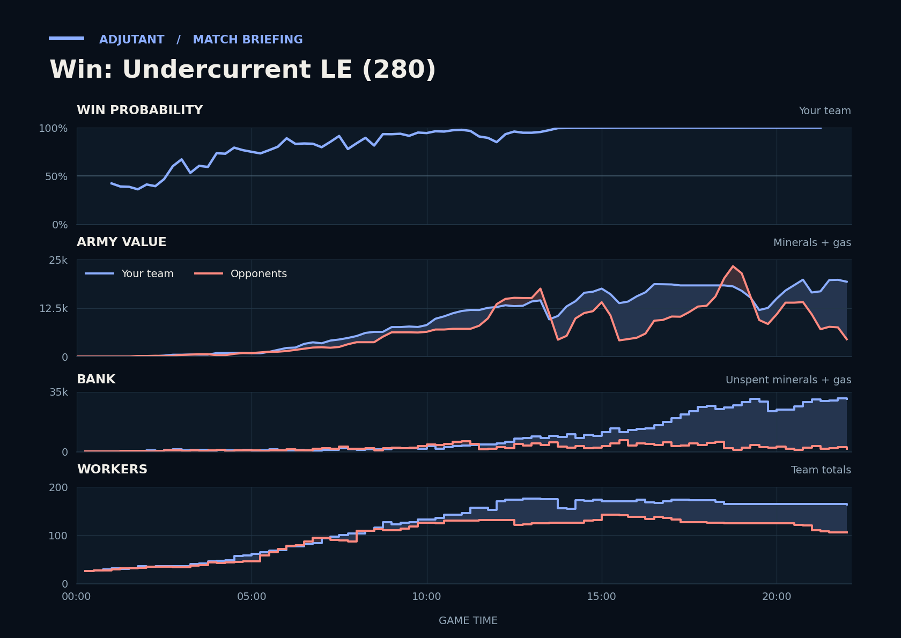

Win: Undercurrent LE (280)
Provisional debrief. The full report (timeline, insights and analysis) is being generated.

**Win.** In the last fight at TakeTheTip's sixth, the duo went in about 1.2x ahead on army value, and Jabberwock typed gg.
**Why**
- 1:54–3:24: Army traded evenly, but Jabberwock lost Photon Cannons and Pylons; Jabberwock's income was lowest of the four at 4:00.
- 8:32–8:41: Scallop's Banshees killed LbforLbGOAT's Drones and Spire; LbforLbGOAT had no Spire until 16:35.
- 20:35–21:53: TakeTheTip's Lurkers killed Jabberwock's Stalkers; the opponents lost 15,000 army and Jabberwock typed gg.